Mr. Floyd's Fishing, Hunting, & Bucket-List Trips
Fishing

I've been fishing as long as I can remember, and it was my father that me "hooked" on this sport! Fishing is just a great, positive way to spend time together with others while also enjoying and learning about nature. My favorite part about fishing is the mystery of the water though, along with the never-ending quest to catch another slammer!
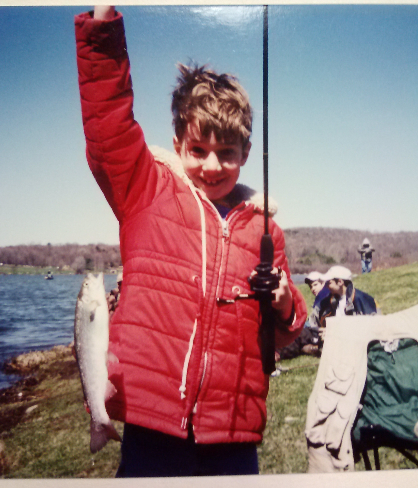 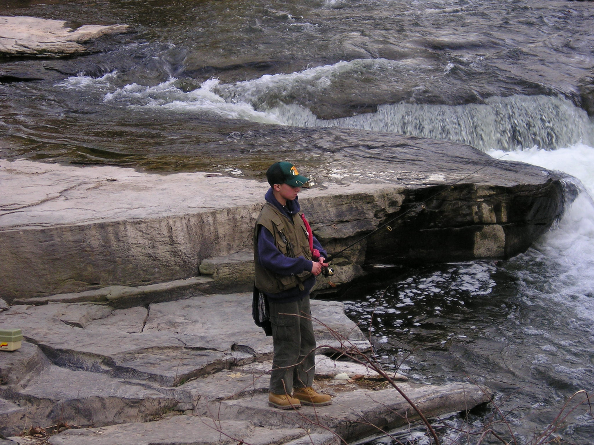 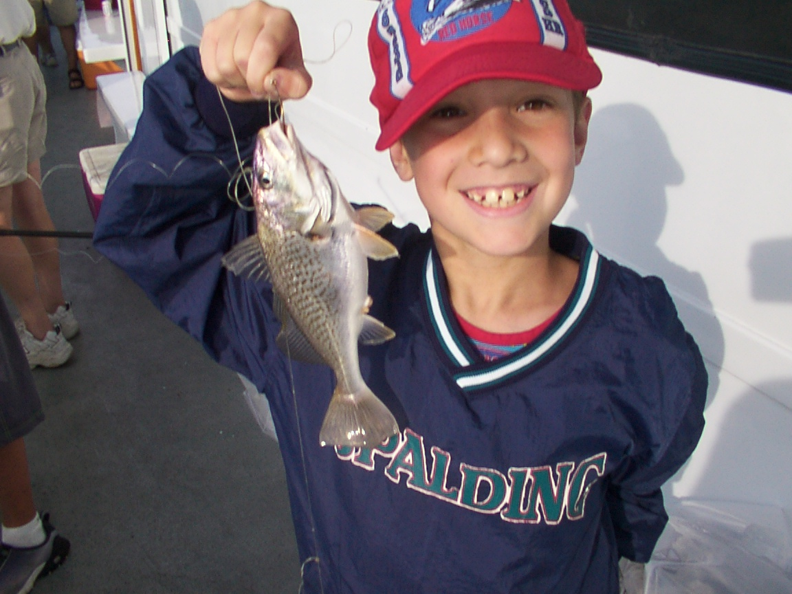Even at a young age I was a FEARLESS angler! Just look at those rapids!
Slammers
The goal of every angler is to catch big, RARE fish! I've caught a few fish that could thus be termed a "slammer", such as my first (and still only) Palomino along with my 20" Rainbow!"
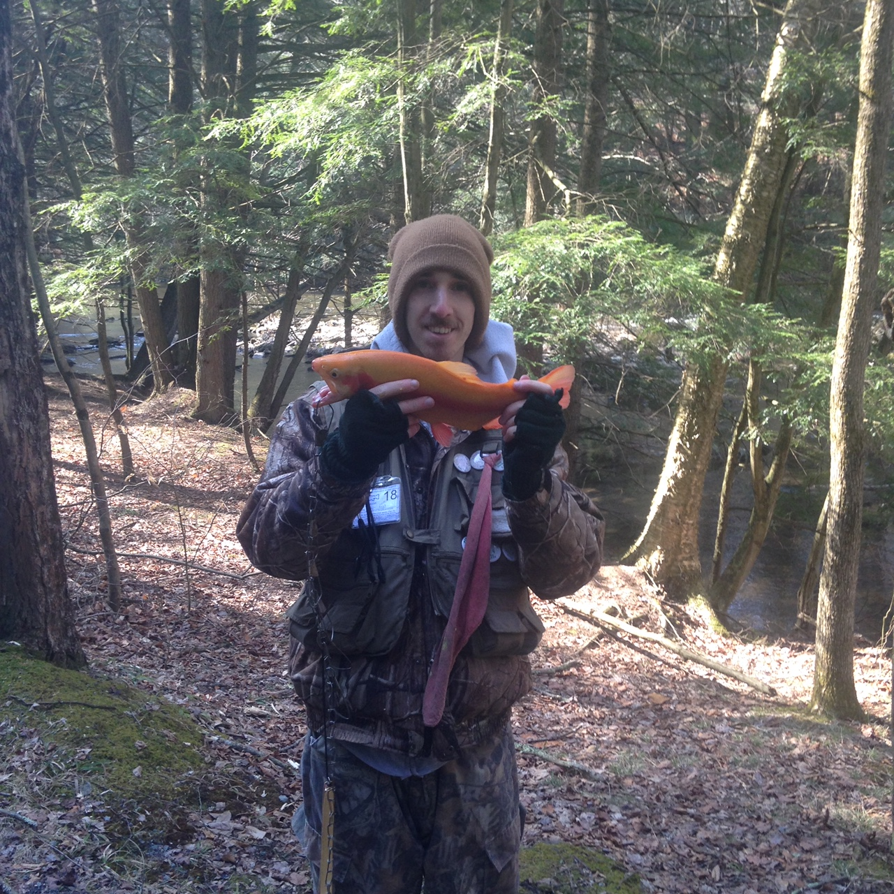 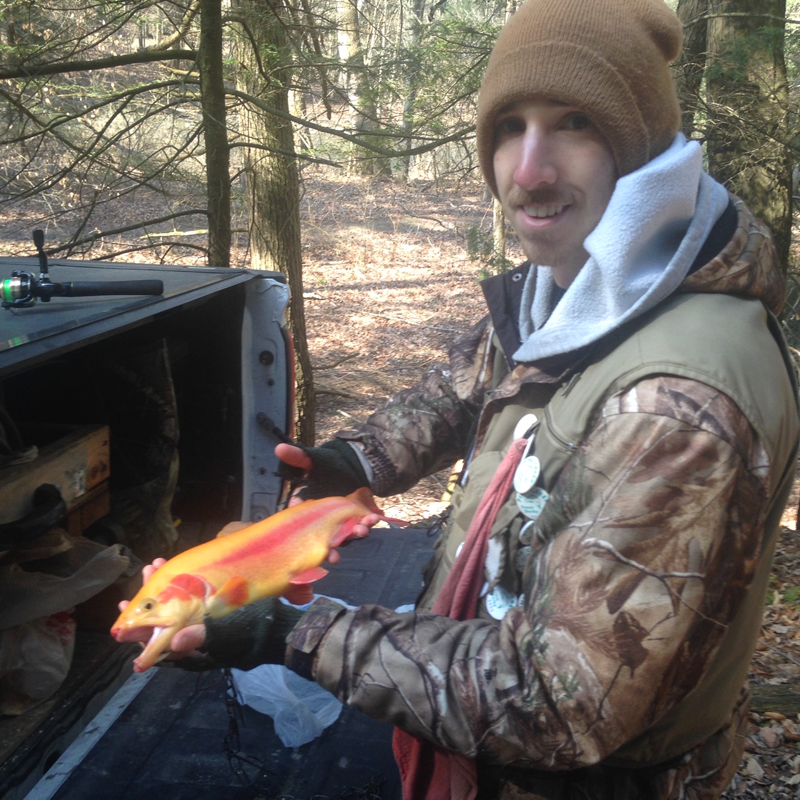 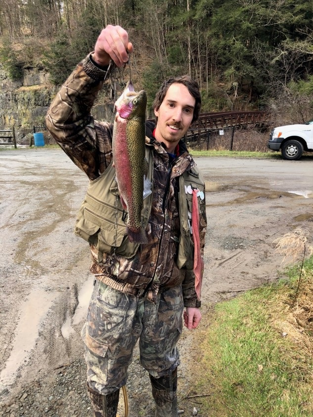 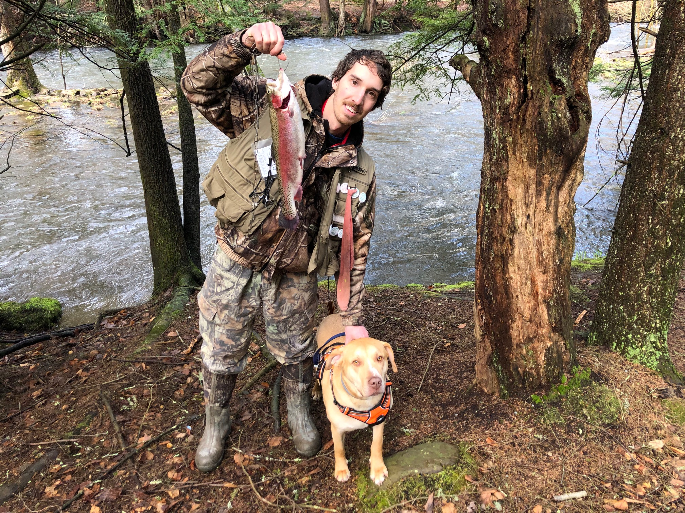The Pine Creek Trout Tournament
Trout have always fascinated me, so most (but not all!) of my time spent fishing is spent angling for them. One yearly tradition that my father and I have is our annual trip to the Pennsylvania Grand Canyon's "Pine Creek". PA's version of the Colorado River, this challenging body of water is home to a yearly trout derby that we've participated in for over a decade. The memories and moments I've had while on (and around...and traveling to!) the Pine are priceless and definitely worthy of their own section on this page!
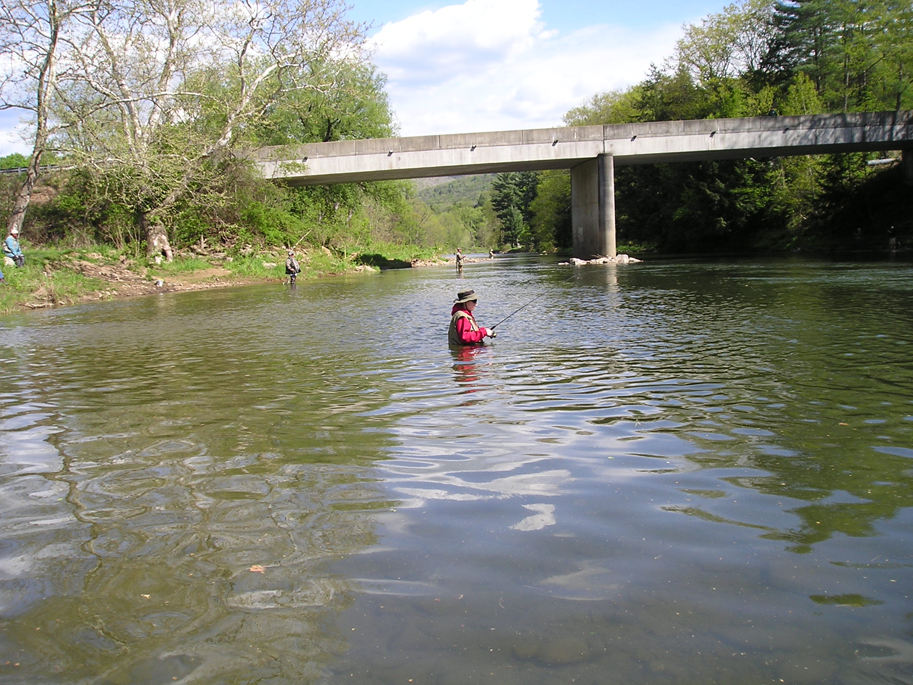 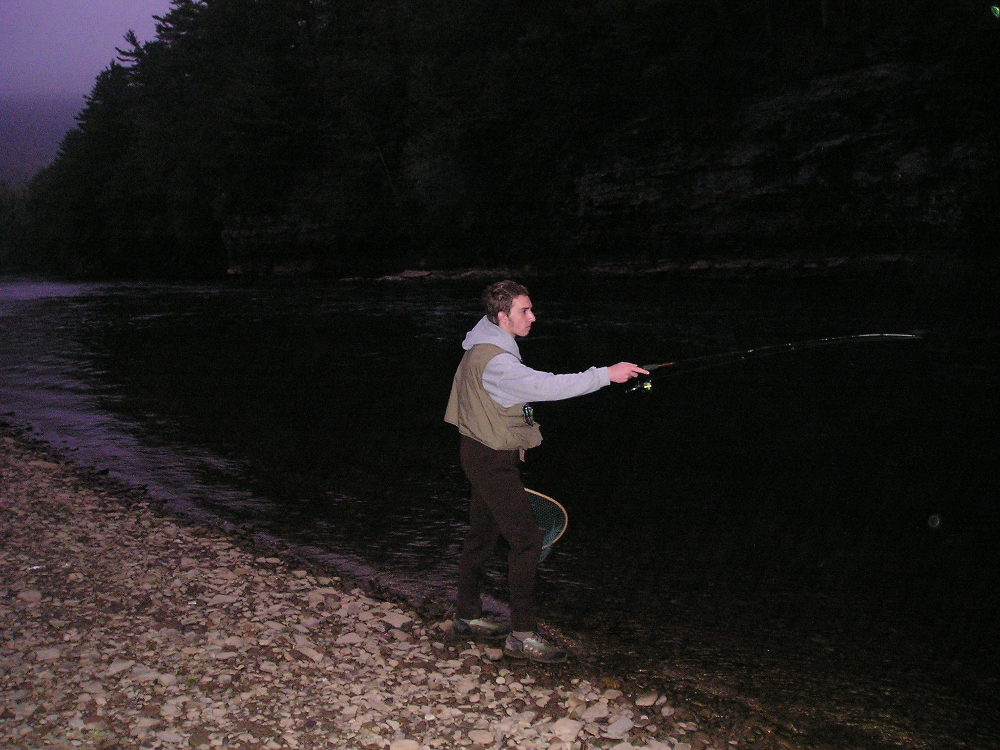My father and I talked for years about how we just had to "yak" the Pine, and it took many years to get the logistics right but we finally did back in 2016. And did we ever....we kayaked a stretch of water over 12 miles long in one day! This was a big check-mark on our bucket lists!"
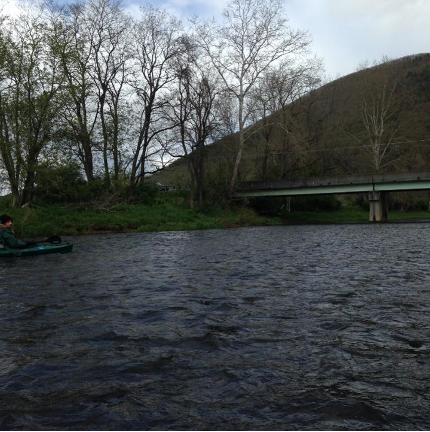 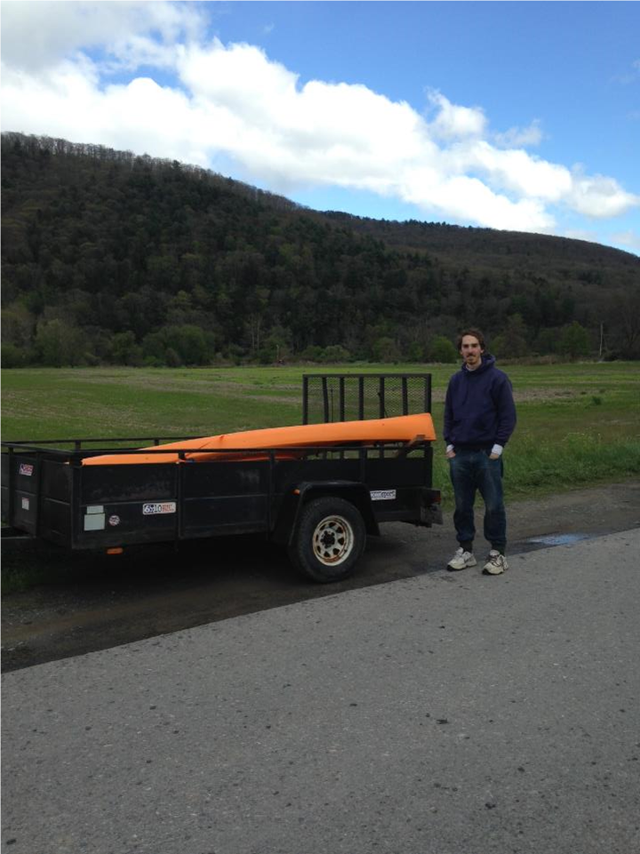